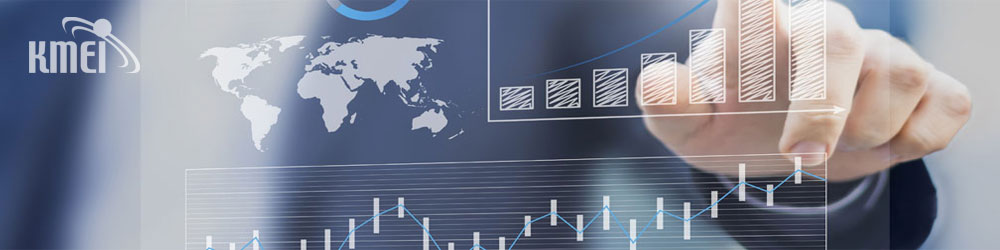

연구원 설립
KMEI INSTITUTE
연구원 소개
전문성과 신뢰를 바탕으로 지역경제와 국가경제의 발전을 연구합니다.
인사말
경남경영경제연구원을 찾아주셔서 감사합니다

“저희 연구원 홈페이지를 찾아주셔서 감사드립니다.”
사단법인 경남경영경제연구원은 2005년 3월 31일 설립된 이후 국가계약 제도와 관련 시스템을 연구해 왔습니다. 국가와 지방자치단체, 공공기관의 원가계산·검토 및 계약금액 조정 업무를 수행하며 지역경제와 국가경제의 발전에 기여하고 있습니다.
지방행정·재정 분야의 연구, 타당성 조사와 기본계획 수립, 지역경제 동향 분석, 물가변동 및 개발비용 산정·검토, 법원 감정원가 산정 등 다양한 분야에서 전문 연구진과 함께 창의적인 연구를 이어가고 있습니다.
앞으로도 과학적인 연구기법을 발전시키고 지방자치단체와 정부·공공기관에 신뢰할 수 있는 연구서비스를 제공하겠습니다.
감사합니다.
About KMEI
연구원 개요
경남경영경제연구원은 공공부문의 합리적인 의사결정을 지원하는 종합학술·원가계산 전문 연구기관입니다.
경남경영경제연구원
경상남도 기반 전문 연구기관
학술·정책연구
지방행정과 재정, 지역경제 동향 및 공공정책을 조사·분석합니다.
타당성 검토·기본계획
공공사업의 필요성과 실현 가능성을 분석하고 실행계획 수립을 지원합니다.
원가계산·원가검토
공공계약과 사업에 필요한 적정 원가를 전문적으로 산정하고 검토합니다.
계약금액·개발비용 검토
물가변동에 따른 계약금액 조정과 개발비용 산정·검토를 수행합니다.
법원 감정원가
전문성과 객관성을 기반으로 법원 전문가감정 원가를 산정합니다.
조사·경영진단
여론조사와 기업·경영진단을 통해 정책 및 경영 개선 자료를 제공합니다.
Our Purpose
설립목적
전문 연구와 객관적인 분석을 통해 공공기관의 합리적인 의사결정과 지역사회의 지속 가능한 발전에 기여합니다.
공공성
국가와 지방자치단체, 공공기관의 정책과 사업이 공익에 부합하도록 신뢰할 수 있는 분석 결과를 제공합니다.
전문성
각 분야 전문가와 우수한 연구진을 바탕으로 과학적 연구기법과 객관적인 원가 산정 체계를 발전시킵니다.
지역발전
지역경제와 행정·재정에 관한 연구를 통해 경남과 국가경제의 균형 있는 발전에 기여합니다.